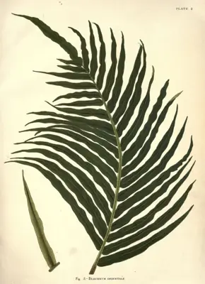

pranet · 出典付きの植物図鑑
乌毛蕨
Blechnopsis orientalis (L.) C.Presl · Blechnaceae

説明：情報なし
異名: Asplenium orientale (L.) Bernh., Blechnopsis adnata (Reinw. ex de Vriese) C.Presl, Blechnopsis cumingiana C.Presl, Blechnopsis elongata C.Presl, Blechnopsis imbricata (Blume) C.Presl, Blechnopsis javanica (Blume) C.Presl, Blechnopsis longifolia (Cav.) C.Presl, Blechnopsis nitida (C.Presl) C.Presl, Blechnopsis pectinata (C.Presl) C.Presl, Blechnopsis pyrophila (Blume) C.Presl, Blechnopsis salicifolia (Kaulf.) C.Presl, Blechnopsis stenophylla C.Presl, Blechnum adnatum Reinw. ex de Vriese, Blechnum agrostifolium Goldm., Blechnum auritum Goldm., Blechnum elongatum C.Presl, Blechnum elongatum Gaudich., Blechnum imbricatum Blume, Blechnum javanicum Blume, Blechnum lomarioides Gaudich.
同定や利用は自己責任でお願いします。この図鑑だけを根拠に野生の植物を食べないでください。
出典
- 学名: World Flora Online Plant List 2026-06 · CC0 1.0
- 名前: Wikipedia の記事名と Wikidata · CC0 1.0（Wikidata）。記事名は事実
- 食用・毒性: World Checklist of Useful Plant Species (Diazgranados et al. 2020, RBG Kew) · CC BY 4.0
- 分布: World Checklist of Vascular Plants (WCVP), RBG Kew, version 2026-06-04 · CC BY 3.0
このページは pranet のデータから自動生成しています。コードは MIT、データは項目ごとのライセンス（説明）。